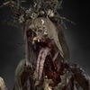
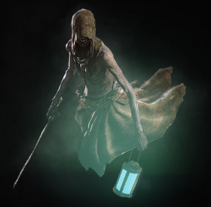
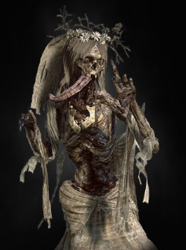
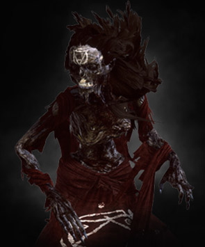
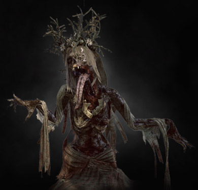

BESTIARY
Духи и призраки
-

Призрак
-

Лихо у колодца
-

Полуночница
-

Лешачиха
-

Белая дама
-
Призрак
Заверши перед смертью все свои дела. Попрощайся с семьей. Напиши завещание. Попроси прощения у тех, перед нем виноват. А иначе останешься тут. - Пауль Викар, знахарь, «Советы умирающему»
Священники и ученые неустанно спорят о том, действительно ли души отравляются после смерти в мир иной, где их ждут вечная радость или страдание. Обе группы, однако, согласны с тем, что происходит с душами, которые по каким-то причинам остаются в нашем мире: они становятся призраками. Судя по причитаниям этих созданий, завидовать их судьбе не стоит.
-
Лихо у колодца
Платье на ней грязное, все изодрано, кожа прямо кусками сходит. А воет… будто страдает очень. - Одолан из белого Сада
На долю обитателей белого Сада выпало куда больше страданий, чем они могли вынести. Войска потоптали им озимые, грифон начал таскать скот, и – будто и без этого селению не доставало бед – в ближайшем колодце завелась полуденница. И вовсе не странно было, что это создание, как бы венчавшее все беды Белого Сада, местные прозвали лихом. Ведьмак чувствовал, что нечто связывает полуденницу с местом её обитания, а значит, чтобы отправить её душу в мир иной, Геральт должен был сперва разгадать её секрет.
Когда же это было сделано, началась подготовка к битве: полуденница – существо весьма опасное. Она может сбить противника с толку, ослепив его или создав собственные зеркальные отражения, которые будут понемногу вытягивать жизненную энергию из жертвы, тогда как их создательница останется нетронутой. В бою с ней ведьмак не мог рассчитывать на один только меч: чтобы заманить её в ловушку и заставить принять материальную форму, был нужен Знак Ирден.
Обычно чувства ведьмаков по отношению к убиваемым чудищам весьма просты: нечто вроде злобы по отношению к самым жестоким тварям и омерзение – к отвратительным. Однако полуденница из Белого Сада вызывала у ведьмака лишь симпатию и сострадание. Еще долго Геральта не покидали мысли о молодой женщине, которую страшная смерть и сильнейшие чувства превратили в жуткое чудовище.
-
Полуночница

От полуночницы исходят такая безбрежная скорбь, тоска и злоба… Я их боюсь, как и все. Но прежде всего – мне их жаль. -Аэллин Альтспарр, эльфская трубадурка
В сравнении с другими охотящимися в ночи чудовищами – катаканами, носфератами или волколаками, – полуночница (и её более редкая разновидность мрачница) может показаться безопасной. Много ли вреда может, в конце концов, наделать бледная, иссушенная женщина, запуганная в изодранное платье? Так вот: много. Вместо того чтобы убедиться в этом на собственной шкуре, лучше на всякий случай избегать ночных прогулок по лугам и полям.
Подобно полуденницам, полуночницы появляются почти всегда в сельской местности. Их жертвами становятся чаще всего припозднившиеся прохожие, но если верить сплетням, им также случается пробираться в хаты и убивать погруженных в сон крестьян.
Во время боя полуночница большую часть времени остается нематериальной, а следовательно, нечувствительной к ударам. Принимать более телесную форму она может всего на несколько минут, чаще всего – непосредственно перед атакой. Ослабев, она создает несколько собственных проекций, которые, хотя и не имеют возможности атаковать напрямую, служат своеобразными проводниками, и с их помощью высасывает жизненную силу своих жертв. К счастью, эти проекции можно легко уничтожить, лишив полуночницу возможности восполнять потраченные силы.
Полуночница может принять нематериальную форму, и тогда её чрезвычайно трудно ранить. Чтобы сделать её более материальной, следует заманить призрака в ловушку Знака Ирден или использовать бомбу Лунная пыль. Когда призрак обретет тело, его можно убить, нанося быстрые удары серебряным мечом, желательно – покрытым маслом против призраков.
-
Лешачиха
Значица... эта призрачница - наша Зуля? - Болько, староста Полесья
Говорят, пламя истинной любви никогда не гаснет. К сожалению, в словах этих слишком много правды. Потому, вероятно, Зуля из Подлесья, которую разделила с возлюбленным смерть, и не могла найти покоя в ином мире и вернулась в мир живых в виде полуночницы.
Сражаться с таким созданием невероятно сложно. Полуночница создает как бы зеркальные отображения самой себя, сбивая с толку своих противников. Сама же она может принять нематериальную форму, став совершенно неуязвимой для ударов. Лучший способ воплотить ее - поставить ловушку Ирденом, и пока полуночница не освободилась, следует бить по ней Знаком Игни. Самое же главное - и не думай выходить против полуночницы в полночь при высокой луне.
Этот мстительный призрак убил бы всех жителей деревни до последнего, если бы в Велене не появился знаменитый ведьмак Геральт из Ривии, которому как раз были нужны деньги.
-
Белая дама
-А что за Мирно? - Были тут такие четверо, лодыри и пропойцы. Осушили пару кружек и удумали, что если вместе Белую Даму отымеют, то она и уберется отсюда. - из услышанного на полях у Новиграда
Создание, поселившееся на полях у Новиграда, оказалось полуденницей. К месту обитания её притягивало некое мощнейшее чувство: любовь, ненависть, злоба или все три одновременно. Как и всякий призрак её типа, она, без сомнения, могла создавать свои зеркальные отражения, которые позволяли ей сбить с толку противников и в то же время – восстановить силы. По счастью, быстрый удар серебряного клинка с легкостью развеивает эти зеркальные образы. Следовало ожидать, что в бою она, как и всякая полуденница, развоплотится (став практически неуязвимой), и вернуть ей физическое тело можно будет только с помощью ловушки Знака Ирден или специальной бомбы. На воплощенную же полуденницу следует обрушить мощные удары меча или наложить Знак Игни. И, наконец, напомню две ведьмачьи поговорки: «Чем дольше дерешься с полуденницей, тем у тебя меньше шансов выжить» и «Начни бой с полуденницей в полдень – к закату будешь мертв».
Этот сильный, мстительный призрак уже давно поселился на полях, убивая всякого, кто проходил мимо. Хотя колосья склонялись к земле под грузом зерен, испуганные крестьяне не могли начать жатву, и деревне грозил голод. Они собрали все свои последние сбережения, чтобы нанять ведьмака. И потратили деньги не зря.